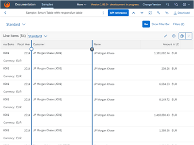

What's New in SAPUI5 1.88
What's New in SAPUI5 1.88
Announcements
|
End of Support for Microsoft Internet Explorer 11 Starting with version 1.88, SAPUI5 no longer supports Microsoft Internet Explorer 11. For more information, see SAPUI5 Support Status for Microsoft Internet Explorer 11. |
Demo Kit Feedback
|
Demo Kit Improvements Thank you all for using the Demo Kit feedback function! We have received many comments and suggestions about the different Demo Kit functionalities and we are considering all of them. Please continue providing your valuable feedback, and we will continue to implement it. We have improved the following Demo Kit areas:
|
New Controls
Empty states are moments in
the user experience where there’s no data to display. Success
states are occasions to celebrate and reward a user’s special
accomplishment or the completion of an important task. The new
 For more information, see the API Reference and the Samples. |
Improved Features
|
SAPUI5 Models The new version of SAPUI5 introduces a new
|
|
SAPUI5 OData V4 Model If you use a list binding for an OData V4 model and have
specified a list of groupable properties in the
For more information, see OData V4 Model, the API Reference, and the Samples. |
|
Test Recorder We've introduced the option to generate code snippets with assertions. Assertions verify that the selected property will have exactly the same value during the test as it does at the moment of recording. For more information, see Test Recorder. |
|
White Spaces in Spreadsheet Export Leading and trailing white spaces are now also taken into account during the spreadsheet export and are shown in the generated spreadsheet. For more information, see Spreadsheet Export, the API Reference, and the Samples. |
Improved Controls
|
We've visually modified the filter tab of the table
personalization dialog, or
Note
If you have tests that depend on the presence of the exclude
operations dropdown or the |
|
We have added a new |
|
We have improved the usability of the Gantt chart with the large interval/label always visible on the time axis. For more information, see the API Reference and the Sample. |
|
As of the SAPUI5 1.88 release, the Upload Collection control is
deprecated. You can use the Upload Set
( For more information, see the API Reference. |
|
We have introduced several small visual changes:
Note
If you have OPA tests that depend on the previous states of these controls, you must adapt the tests accordingly. |
|
We've introduced the highlighting of search suggestions of the
|
|
We've introduced a new property,
|
|
We've introduced a new control called
The maximum number of fields that can be separated by a delimiter
is three. The default delimiter is "/". In the
For more information, see the API Reference. |
We have improved the usability and accessibility of column resizing for the responsive table. For example, we have added resize handles and keyboard shortcuts in the table. For more information, see the API Reference and the Sample.  |
|
|
|
As an app developer you can now define custom currency names with a length of up to 5 symbols and values with a larger number of digits after the decimal point. If not explicitly set, the default maximal precision is decided based on the number of digits after the decimal point. For more information, see the Sample. |
SAP Fiori Elements
The following changes and new features are available for SAP Fiori elements for OData V2 and
SAP Fiori elements for OData V4:
|
The following changes and new features are available for SAP
Fiori elements for OData V2:
|
The following changes and new features are available for SAP Fiori elements for OData V4:
|
In this section:
Parent topic:
Previous:
Next: